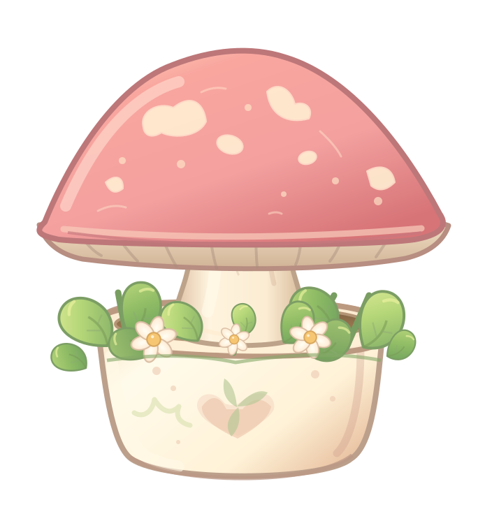

🍄 小蘑菇 · 新旧资源对照
只比较渲染外观，不改动 Rust 游戏存档。新版仅有健康 / 睡眠两种姿态，其他生命阶段仍由旧资源提供。新版是结构试制素材，尚未达到最初水彩精修目标。
旧版 · 256px 概念图切片

新版 · 694×736 分层母版
正式集成入口：种植小蘑菇后，打开挂件右下角「⋯」菜单，选择「预览新版小蘑菇」。再次点击可以回退旧版；缺水和枯死状态自动回退旧素材，不影响倒计时或存档。
只比较渲染外观，不改动 Rust 游戏存档。新版仅有健康 / 睡眠两种姿态，其他生命阶段仍由旧资源提供。新版是结构试制素材，尚未达到最初水彩精修目标。
